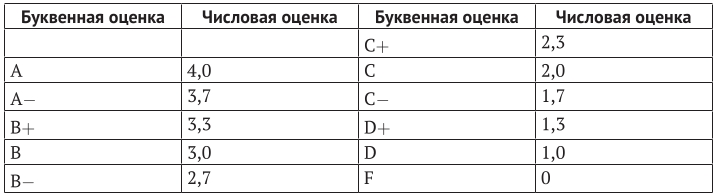

9. Средняя оценка. (в коде есть строки из следующих тем: "словари").
Условие:
В разных странах успеваемость студентов в университетах ведется по разному: где-то в качестве оценок используются буквы, где-то цифры. Соответствие между ними приведено ниже:

Сейчас вам нужно будет рассчитать среднюю оценку по произвольному количеству введенных пользователем буквенных оценок.
Для окончания ввода можно использовать индикатор в виде пустой строки. Например, если пользователь последовательно введет оценки A, затем C+, а после этого B и пустую строку, средний результат должен составить 3,1. Никаких проверок на ошибки проводить не нужно.
Код:
eval = {
"A": 4.0,
"A-": 3.7,
"B+": 3.3,
"B": 3.0,
"B-": 2.7,
"C+": 2.3,
"C": 2.0,
"C-": 1.7,
"D+": 1.3,
"D": 1.0,
"F": 0
}
print()
print("%75s" % "Таблица соответствия оценок.")
print()
for a, b in eval.items():
print("%10s%10s%45s%10s" % ("Для", a, "соответствует оценка", b))
print()
amount = 0
count = 0
while True:
letter_eval = input("%76s" % "Введите буквенную оценку (для завершения программы просто нажмите enter): ")
if letter_eval == "":
break
if letter_eval in eval:
amount += eval[letter_eval]
count += 1
print()
print("%75s" % "Средняя оценка", round(amount / count, 2))